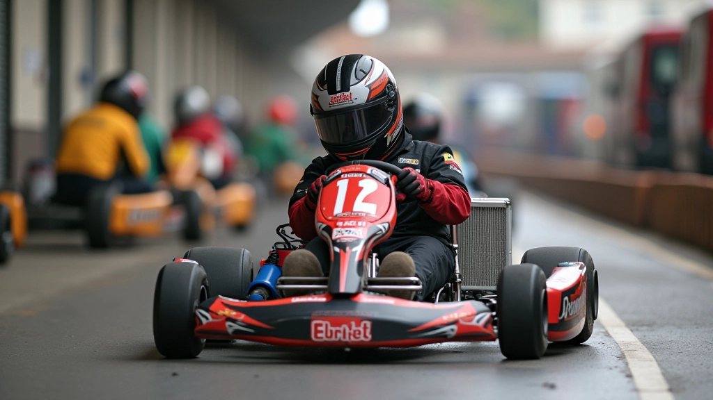
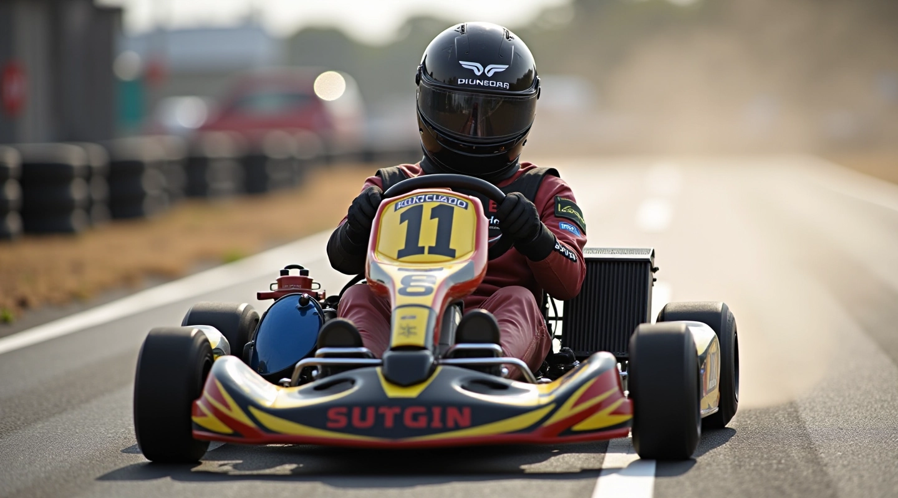
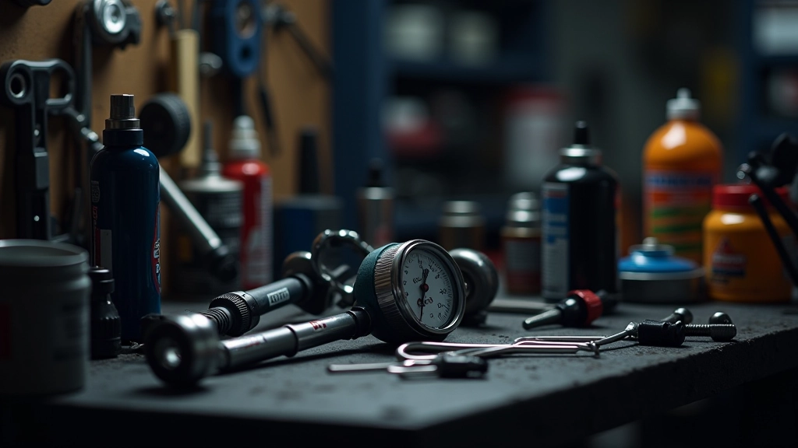
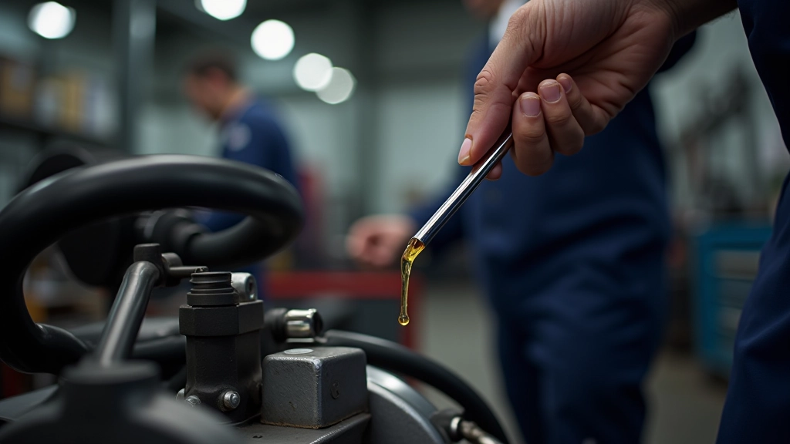

قياس وضبط ضغط الإطارات بشكل صحيح
خطوات عملية لقياس الضغط باستخدام مقياس دقيق وفهم التأثيرات على التعامل والسرعة.
ما يجب فحصه وتنظيفه وإصلاحه بعد كل جلسة تدريب أو سباق للحفاظ على الكارت في أفضل أداء

الكارت يتحمل ضغطاً كبيراً خلال كل جلسة تدريب أو سباق. الحرارة والاحتكاك والقوى الجانبية — كل هذا يؤثر على أجزاء الكارت. إذا لم تقم بالصيانة الدورية، ستلاحظ تراجعاً في الأداء والسرعة.
الصيانة بعد السباق ليست خياراً — إنها ضرورة. الفحص السريع والتنظيف والإصلاح الصغير الآن يمنعان مشاكل كبيرة لاحقاً. أنت ستحافظ على الكارت في حالة ممتازة، وتوفر المال على الإصلاحات الغالية.

تحقق من ضغط الإطارات بعد انتظار ١٥ دقيقة من نهاية السباق. قس الضغط بمقياس دقيق. البحث عن أي تشققات صغيرة أو انتفاخات غير طبيعية.
امسح الأوساخ والغبار من الهيكل والمحرك والعجلات. استخدم فرشاة ناعمة وماء نظيف. تجنب الماء المباشر على المحرك إن أمكن.
اختبر قوة المكابح بسهولة. تحقق من سائل المكابح. لاحظ أي أصوات غريبة أو رائحة حرق غير عادية.
تفقد الرموز والبراغي والمفاصل. تأكد من عدم وجود حركة غريبة. تحقق من محاذاة العجلات بصرياً.
تحقق من مستوى زيت المحرك. تفقد خط الوقود بحثاً عن أي تسرب. قد تحتاج إلى تغيير الزيت كل ٥-١٠ جلسات.
تأكد من أن البطارية مشحونة بشكل جيد. تحقق من جميع الأسلاك بحثاً عن أي تآكل أو قطع.
الإطارات هي أول شيء يؤثر على أدائك. بعد السباق مباشرة، لا تقيس الضغط — الإطارات ساخنة جداً. انتظر ١٥ إلى ٢٠ دقيقة حتى تبرد. ثم استخدم مقياس ضغط دقيق.
ابحث عن ضغط مختلف بين الأمام والخلف. الفرق ١ إلى ٢ بار طبيعي. لكن إذا كان الفرق أكثر من ذلك، فهناك مشكلة. قد يكون هناك تسرب صغير أو تآكل غير متساوٍ.
التنظيف ليس فقط لجعل الكارت يبدو جميلاً. الأوساخ والغبار يمكن أن تسد فتحات التهوية ويرفعان درجة حرارة المحرك. امسح كل شيء بعناية. استخدم فرشاة ناعمة وقطعة قماش جافة.
انتبه للمحرك بشكل خاص. إذا كان رطباً، اتركه ليجف تماماً قبل تخزين الكارت. الرطوبة تسبب صدأاً والتآكل.
افحص مستوى الزيت كل جلسة تدريب. الزيت المنخفض يسبب احتكاكاً أكبر وحرارة أكثر. استخدم عصا القياس لمعرفة المستوى. إذا كان منخفضاً، أضف المزيد قبل الجلسة التالية.
بخصوص الوقود — تحقق من خط الوقود والموصلات. أي تسرب صغير سيصبح مشكلة كبيرة. وتذكر تغيير الزيت كل ٥ إلى ١٠ جلسات تدريب حسب التوصيات.

هذه الإرشادات توفر نصائح عملية عامة للصيانة الأساسية. كل كارت مختلف، وكل محرك قد يحتاج إلى رعاية خاصة. اقرأ دائماً دليل المالك الخاص بكارتك. إذا لاحظت أي مشكلة غير عادية، استشر فني متخصص قبل محاولة أي إصلاح بنفسك.
لا تنتظر حتى يحدث خطأ ما. الصيانة المنتظمة توفر الوقت والمال. إليك جدول بسيط يمكنك اتباعه:
فحص الإطارات • تنظيف الكارت • فحص المكابح • فحص الأسلاك
فحص الزيت • فحص سائل المكابح • فحص التعليقات
فحص شامل لجميع المكونات • معايرة العجلات • فحص البطارية
تغيير الزيت • فحص فلتر الهواء • فحص شامل للمحرك
ليس كل زيت محرك مناسب لكارتك. اختر النوع الموصى به في الدليل. الزيت الخاطئ يمكن أن يسبب أضراراً على المدى الطويل.
المحرك يحتاج إلى تبريد جيد. الأوساخ في فتحات التهوية تمنع تدفق الهواء. نظفها بعناية باستخدام فرشاة ناعمة.
الاهتزازات أثناء السباق تفكك البراغي تدريجياً. افحص وشد جميع الرموز والبراغي بانتظام. استخدم مفتاح ربط مناسب.
لا تترك الكارت في مكان رطب أو بارد جداً. خزنه في مكان جاف وبارد. غطِّ المحرك حتى لا يدخل الغبار.
اكتب كل ما تفعله. متى غيرت الزيت؟ متى فحصت المكابح؟ السجل يساعدك على تتبع الصيانة والعثور على المشاكل مبكراً.
أدوات الصيانة الجيدة تجعل العمل أسهل وأسرع. مقياس ضغط دقيق، مفاتيح ربط، فرش تنظيف — هذا أساسي.
الكارت الذي تعتني به يعطيك أداءً أفضل. ليس هناك سر هنا — إنها ببساطة عملية. الفحص المنتظم، التنظيف، والإصلاحات الصغيرة تمنع المشاكل الكبيرة.
لا تتجاهل الصيانة بعد السباق. استغرق الوقت. افحص الإطارات والمكابح والزيت. نظف الكارت. شد البراغي. هذه الخطوات البسيطة تجعل فرقاً كبيراً على المدى الطويل.
والأهم — إذا لاحظت أي شيء غير عادي، لا تتردد في طلب المساعدة من فني متخصص. الصيانة الوقائية أرخص بكثير من الإصلاحات الطارئة.